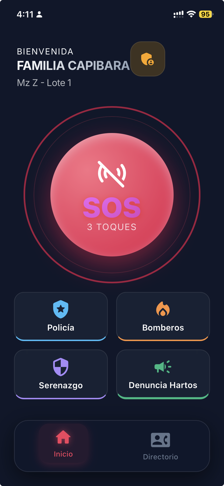
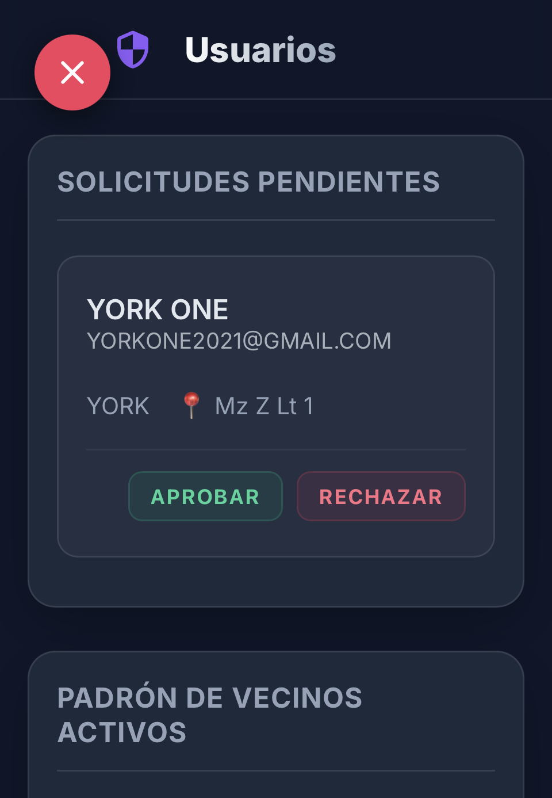
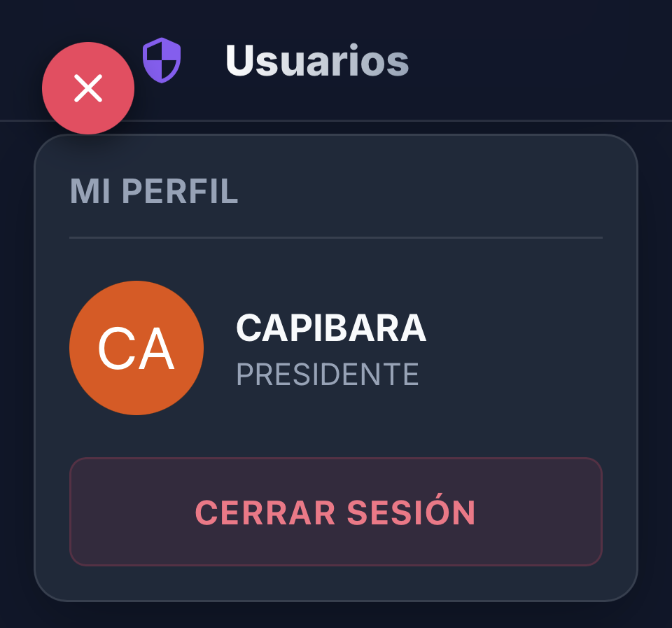
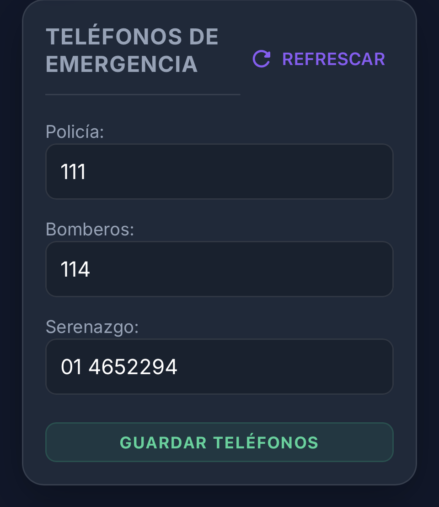
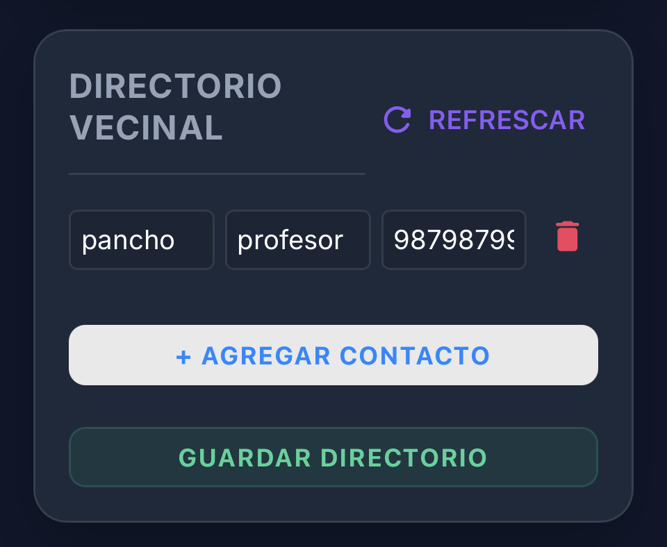
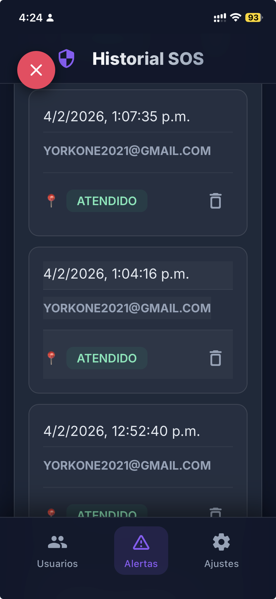

Manual del Presidente
Guía de administración y gestión vecinal
Ingreso al Sistema
Inicia sesión en la App como cualquier vecino.
Usa tu cuenta de administrador (Presidente). Al principio verás la pantalla normal de vecino con el botón de pánico.

Panel de Gestión
Accede a las herramientas exclusivas.
- Botón Escudo/Engranaje: En la esquina superior derecha (junto a tu nombre) verás un icono especial. Tócalo.
- Acceso: Esto te llevará al Panel de Control donde podrás gestionar usuarios y alertas.

Aprobar Vecinos
Revisa las solicitudes pendientes de nuevos registros.
Validar: Revisa que el nombre y dirección (Mz/Lote) sean correctos.
Acción: Toca el botón VERDE para aprobar y dar acceso inmediato, o el botón ROJO para rechazar.

Perfil de Usuario
Vista detallada de la cuenta.
Desde aquí puedes ver la información del perfil del presidente o gestionar tu sesión.

Teléfonos de Emergencia
Gestiona los números de ayuda rápida.
En esta pantalla debes configurar los números a llamar (Policía, Bomberos, Serenazgo).

Directorio Vecinal
Contactos útiles para la urbanización.
En este campo se deben configurar los números telefónicos varios para uso de la comunidad.

Historial SOS
Registro de eventos.
Esta es la pestaña de historial SOS. Revisa quién activó la alerta y cuándo.
